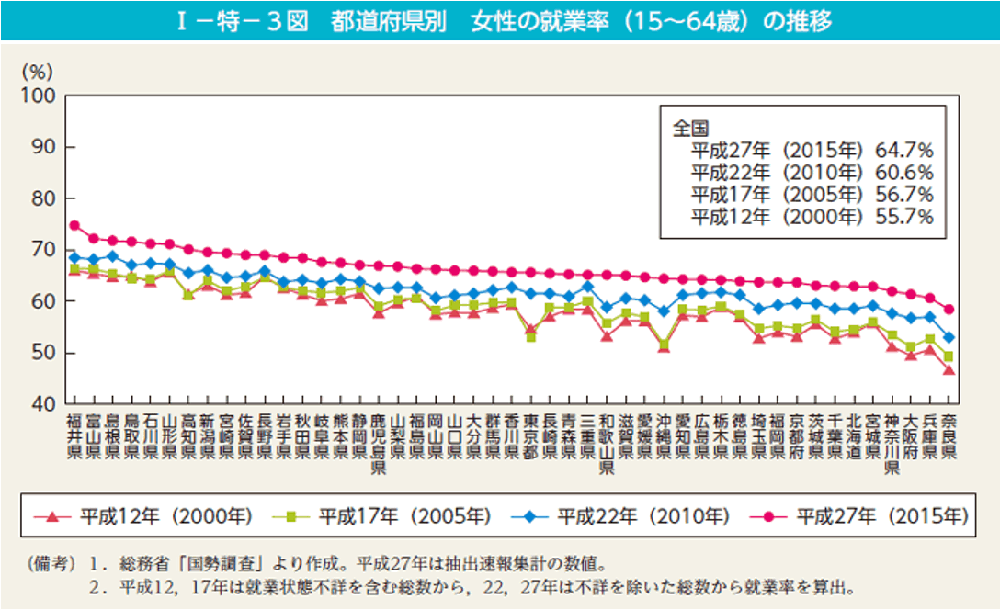
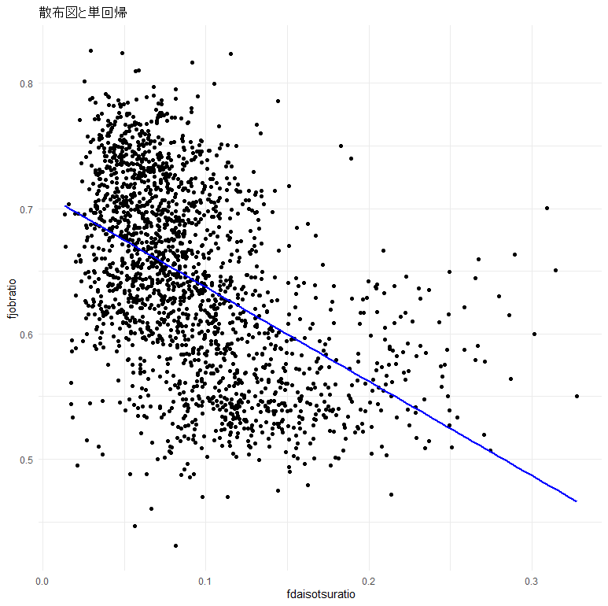
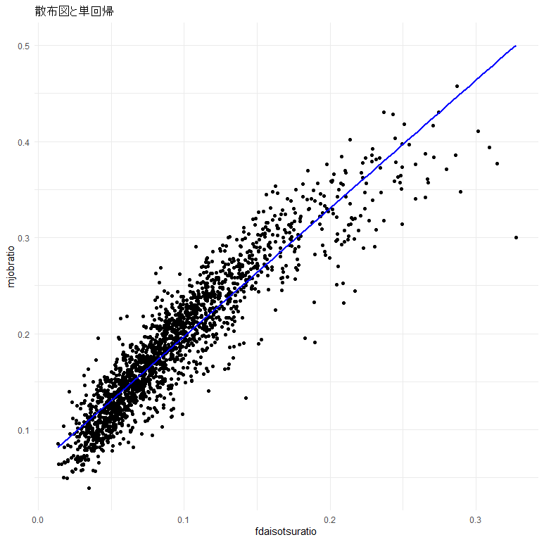
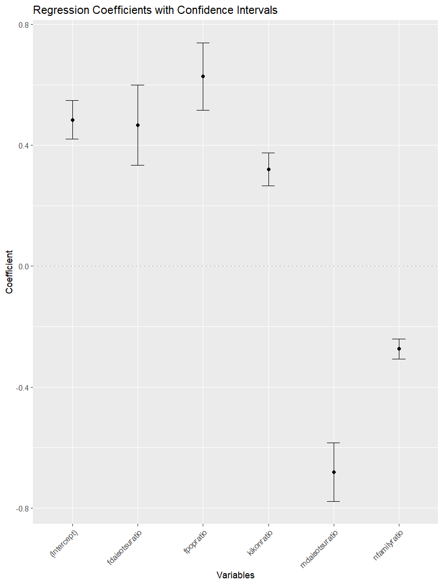
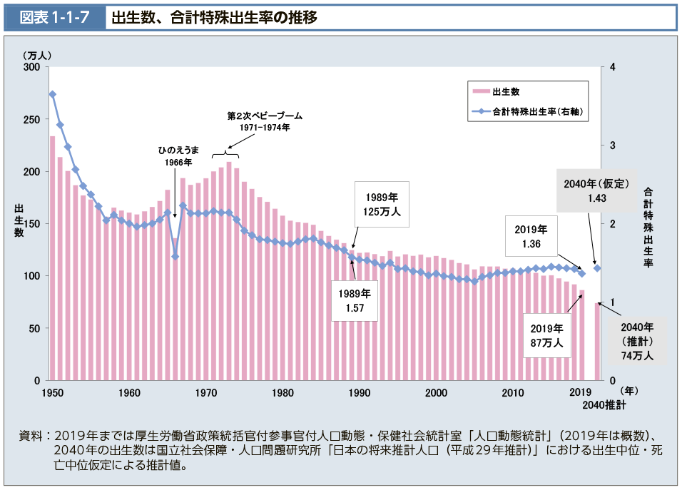
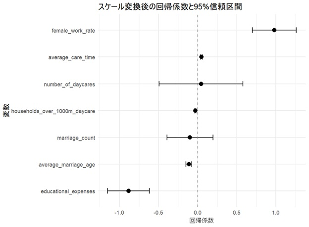

ある先輩グループは、日本の各自治体において女性の就業率に影響を与えている要因を探ることにしました。まず直感的に考えて、都市部のほうが女性の就業に対するバイアスが少ないだろうから、女性の社会進出は人口の多い東京、神奈川、大阪等の地域で最も進んでいるのではないかと考えました。しかし、総務省による国勢調査のデータを見てみると、なんだか様子がおかしいことに気づきます。

東京の女性就業率はほぼ全国平均並、神奈川や大阪に至っては最下位付近です。上位を占めているのは軒並み日本海側の「大都会」を有さない県です。ここで一旦仮説を振り出しに戻し、「都会」以外の要素と女性就業率の関係を見ていくことになります。大学に入学したばかりの彼女たち、当然次は女性の大卒割合と女性の就業率の相関を見てみることにします。さすがにこれは正の相関（一方が上がれば他方も上がる）が見られるだろう・・

なんと、明らかな負の相関が！横軸の女性大卒割合が上がるほど、縦軸の女性就業率が下がっています。分析者たちにとっては衝撃的な結果ですが、これだけではまだ「女性の大学進学は就業率を下げる」という因果関係があるとは言えません。ここで試されるのが、「データを扱う」能力ではなく、社会の中で働く因果の関係を想像する力です。もしかしたら「専業主婦を養える年収を持つ男性の割合」にカギがあるのでは？男性の収入は学歴と相関しているからです。そこで、女性大卒割合（横軸）と男性大卒割合（縦軸）の相関を見てみると下図のように見事に比例関係にありました。

これが意味するのは、女性大卒割合が高い地域は男性大卒割合も高いため、「女性大卒割合と女性就業率の関係」だけを見ても、それは「男性大卒割合と女性就業率の関係」も同時に見てしまっているということです。つまり、女性大卒割合と男性大卒割合それぞれの独立した影響を測る必要があるのです。こんな時に分析者の大きな味方となるのが、重回帰分析という分析手法です。この手法を使うと、複数の要素がそれぞれ持つ個別の影響を推定できます。

上図は、先輩たちが実施した重回帰分析の結果をグラフにしたものです。黒い点はそれぞれの要素の影響度合いを、そこから伸びている「ヒゲ」は推定の精度を表しています。ヒゲが短いほど黒い点の位置を信頼できます（みなさんも学期を通じて理解することになりますが、このグラフのヒゲは全て「充分に短く」なっています）。縦軸が0の時に影響はなく、上に行くとプラスの相関、下に行くとマイナスの相関があるということになります。横軸に並んでいるのが各要素（「説明変数」と呼ばれます）で、左から切片（各要素の影響がなかった時の女性就業率）、女性大卒割合、女性人口割合、既婚率、男性大卒割合、核家族割合、と並んでいます。予想した通り、女性大卒割合（左から二番目）と男性大卒割合（右から二番目）は真逆の影響を与えていることがわかります。ざっと見るとあんなにきれいに比例していた両変数が、女性就業率には反対の影響を与えているということがひと目で見て取れます。つまり、東京においては「大卒女性が就業する力」と「大卒男性が専業主婦を養う力」が拮抗し、結果として全国平均に近い女性就業率に繋がっているのだろうと推論できます。
社会のデータを分析すると、一見直感に反する結果が出ることがあります。今回のように、「女性の大卒割合が高い地域ほど、女性の就業率が低い」という意外な相関を目にしたとき、単純に「女性が大学を出ると働かなくなるのか？」と結論づけるのは早計です。実際は、背後には「その地域の男性の大卒割合が高く、高収入の男性が多いため、専業主婦になる選択肢が増える」といった別の要因が隠れていました。因果関係に近づくためには、「女性大卒割合の、男性大卒割合から独立した影響」を探り当てる必要がありました。
このように、社会のデータにおいてはさまざまな要素が絡み合っており、単純な相関関係を見つけるだけでは本当の因果関係はわかりません。どの要因が本当にどのような影響を与えているのかを見極めるには、統計的な手法を適切に使い、かつ、社会の仕組みを深く考える力も必要です。データを眺め、そこだけでは見えてこない「本当のつながり」を探る。このプロセスこそが、社会問題をデータで考える面白さであり、難しさでもあります。
同様に、日本の出生率の問題についても深堀りしてみましょう。別の先輩グループは、日本の合計特殊出生率が2014年に1.45だったのに、2024年には1.15まで減少していることに着目しました。合計特殊出生率というのは、「15～49歳までの女性の年齢別出生率を合計した」政府統計です。一般的に、子供は二人のペアのもとに出生するため、合計特殊出生率が2未満だと人口減少に繋がります。

一部の政治家は、選挙が近くなると、日本の出生率の低下は女性の社会進出が原因であるかのように訴えます。もっともな主張に聞こえすが、実際のところエビデンスを見たことはないかもしれない。扱うにはとても難しい問題に思えますが、このような疑問も、生成AIが発達した今、政府のデータを使えば自分で解答を与えることができてしまいます。
この分析も、政府の基幹統計である国勢調査を活用しました。先輩たちの仮説に従うと、女性の就業割合が高い自治体ほど、合計特殊出生率が下がっているはずです。ここで重要な役割を果たしうるのが、「交絡因子」と呼ばれる要素です。交絡因子とは、原因と結果の両方と関係している変数のことです。例として、「サラダを食べると体重が増えた」という現象を訴える人が多数出てきたと想像してみましょう。葉っぱを食べて体重が増えるはずがないけれど、たしかに、サラダを食べれば食べるほど、体重が増えてしまった…。何か見落としている点はないだろうか？勘の言い方は気づいたかもしれません。そう、ドレッシングです。原因はサラダそのものではなく、一緒に食べているドレッシング-つまり油-にあるはずです。ドレッシングがおいしいと、サラダをよく食べるようになり、かつ体重増加に繋がります。合計特殊出生率の場合は、婚姻や保育施設等が考えられます。婚姻や保育所の充実度合いは、女性の働き方にも出生率にも影響を与えるでしょう。このような変数を統計モデルの中に加えると、「それらの影響を取り除いた、注目する変数そのものの影響」を計算することができます。サラダの例で言うと、「ドレッシングの影響を除いた、サラダそのものの体重への影響」がわかるということです。大事なことですね（恐らくほぼゼロでしょう）。
先輩たちは、女性の労働と出生率には以下のようなメカニズムが働いており、結果的に出生率の低下を招いているのかもしれないと仮説立てました。まず、キャリアアップ志向、結婚に対する意欲の衰退、仕事と育児の両立に対する不安といった女性自身の問題がありそうです。役職に就くことや仕事面での自身の成長を目指し、仕事へと没頭した結果、結婚・出産のタイミングをずらす人もいるだろう。ただずらすだけならば、合計特殊出生率に影響はなさそうだけれど、ずらすだけでなく結婚・出産に対する意欲が衰退し、合計特殊出生率を低下させるという可能性も考えられる。また、仕事と育児の両立は大変だから、子供の体調不良によって仕事を早退・欠席しなければならなくなる…。

上の図が、重回帰分析の結果です。前回のグラフとは描画の縦横が異なりますが、読み方は同じです。上から、女性の就業率、介護・看護に要する時間平均、保育所等の数、最寄りの保育所までの距離が1000ｍ以上の住宅に住んでいる普通世帯数、婚姻件数、平均婚姻年齢、教育関係費という変数の、合計特殊出生率に与える影響が並んでいます。もちろん、注目すべきは、一番上の女性の就業率です。驚くことに、明確に正の相関を示しています。相関の係数はほぼ1であり、これはつまり、女性の就業率が0から1に増えると（つまり0%から100%に増えると）出生率は1増えるということになります。女性が誰も就業していない自治体が、女性全員が就業する自治体に変化すると、なんと女性１人につき子供が１人増える計算になります。
この結果は、他先進国における分析結果と一致しています。つまり、現代の先進国においては、女性の社会進出が進むことで子供は多く生まれる傾向にあり、日本も例外ではありません。専門家によると、この背景には、女性の就業率が高くなるほど、育児休暇取得の推進や経済的支援など出産に有利な社会制度が充実するようになるということがあるようです。ただし、この傾向は開発途上国には必ずしも当てはまりません。日本も昭和期の途中までは先進国と呼べるような経済状況ではなかったため、女性の社会進出は出生率を抑制するという認識が生まれたようです。つまり、「何十年も前の認識でいえば」、冒頭に言及した政治家たちも正しかったということになるでしょう。